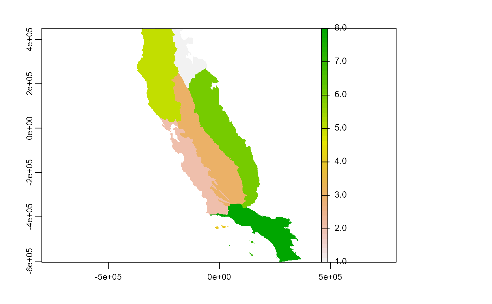
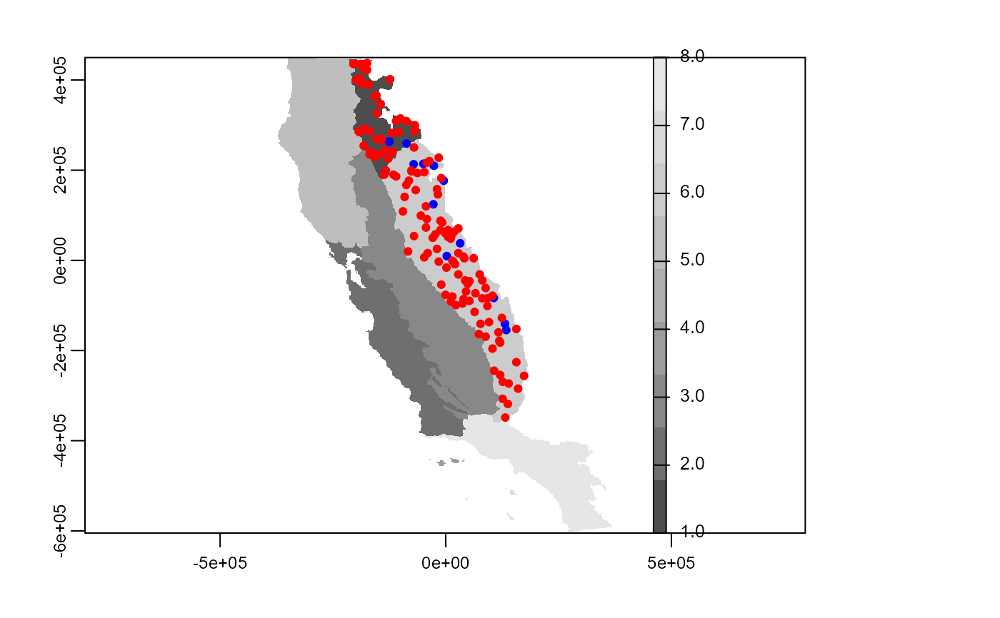
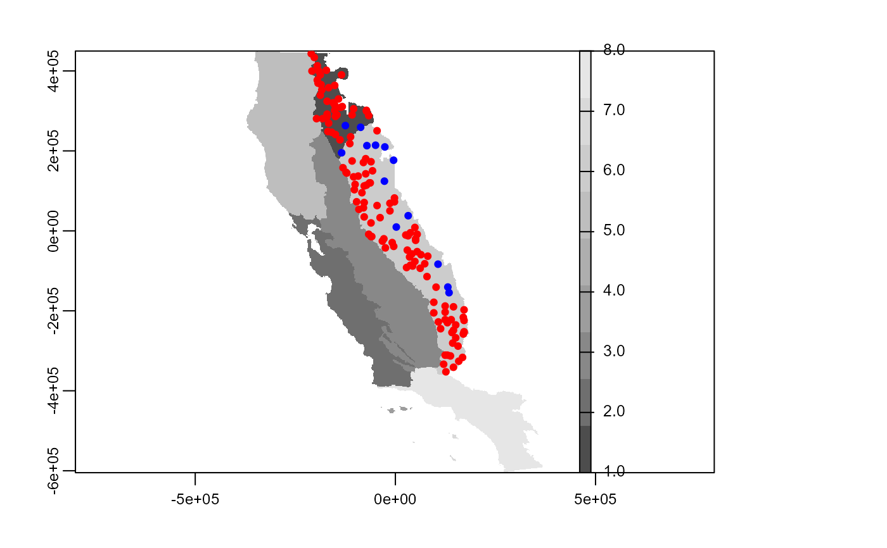
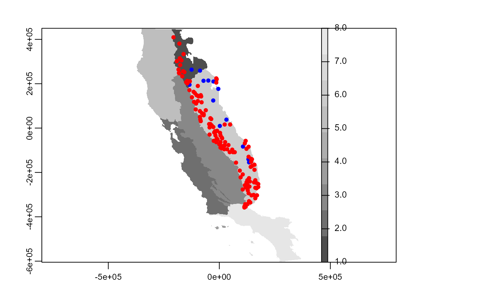
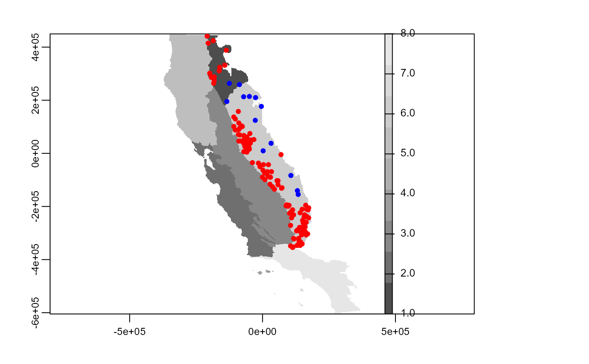
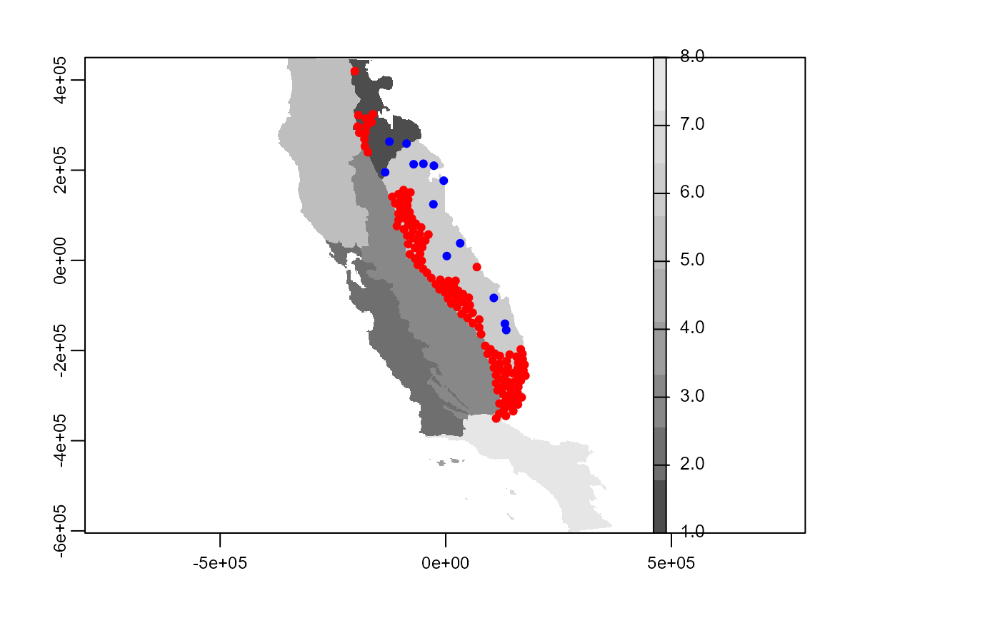
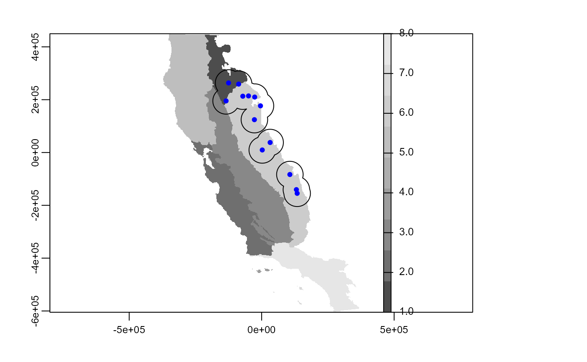
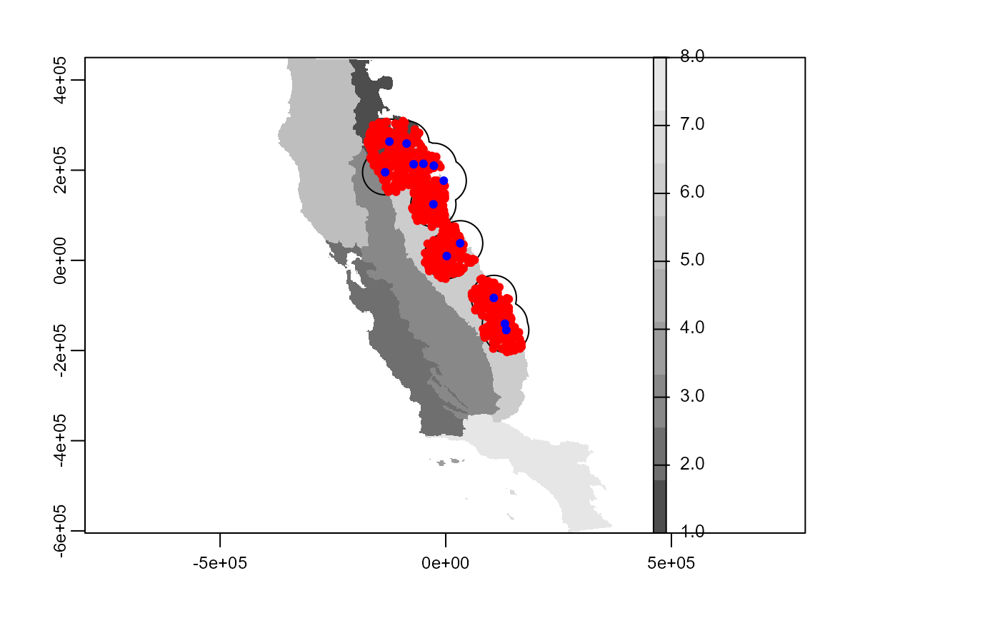

sample_pseudoabs.RdThis function provide several methods for sampling pseudo-absences, for instance totally random sampling method, o with environmental and or geographical constraints.
sample_pseudoabs( data, x, y, n, method, rlayer, maskval = NULL, calibarea = NULL )
| data | data.frame or tibble. Database with presences (or presence-absence, o presences-pseudo-absence) records, and coordinates |
|---|---|
| x | character. Column name with longitude data |
| y | character. Column name with latitude data |
| n | integer. Number of pseudo-absence to be sampled |
| method | character. Pseudo-absence allocation method. It is necessary to provide a vector for this argument. The methods implemented are:
|
| rlayer | SpatRaster. A raster layer used for sampling pseudo-absence It is recommended to use a layer with the same resolution and extent that environmental variables that will be used for modeling. In the case use maskval argument, this raster layer must contain the values to sampling constraint |
| maskval | integer or numeric. Values of the raster layer used for constraining the pseudo-absence sampling |
| calibarea | SpatVector A SpatVector which delimit the calibration area used for a given species (see |
A tibble object with x y coordinates of sampled pseudo-absence points
# \dontrun{ data("spp") somevar <- system.file("external/somevar.tif", package = "flexsdm") somevar <- terra::rast(somevar) regions <- system.file("external/regions.tif", package = "flexsdm") regions <- terra::rast(regions) plot(regions)single_spp <- spp %>% dplyr::filter(species == "sp3") %>% dplyr::filter(pr_ab == 1) %>% dplyr::select(-pr_ab) # Pseudo-absences randomly sampled throughout study area ps1 <- sample_pseudoabs( data = single_spp, x = "x", y = "y", n = nrow(single_spp) * 10, method = "random", rlayer = regions, maskval = NULL ) plot(regions, col = gray.colors(9))# Pseudo-absences randomly sampled within a regions where a species occurs ## Regions where this species occurrs samp_here <- terra::extract(regions, single_spp[2:3])[, 2] %>% unique() %>% na.exclude() ps1 <- sample_pseudoabs( data = single_spp, x = "x", y = "y", n = nrow(single_spp) * 10, method = "random", rlayer = regions, maskval = samp_here ) plot(regions, col = gray.colors(9))# Pseudo-absences sampled with geographical constraint ps1 <- sample_pseudoabs( data = single_spp, x = "x", y = "y", n = nrow(single_spp) * 10, method = c("geo_const", width = "30000"), rlayer = regions, maskval = samp_here ) plot(regions, col = gray.colors(9))# Pseudo-absences sampled with environmental constraint ps1 <- sample_pseudoabs( data = single_spp, x = "x", y = "y", n = nrow(single_spp) * 10, method = c("env_const", env = somevar), rlayer = regions, maskval = samp_here )#># Pseudo-absences sampled with environmental and geographical constraint ps1 <- sample_pseudoabs( data = single_spp, x = "x", y = "y", n = nrow(single_spp) * 10, method = c("geo_env_const", width = "50000", env = somevar), rlayer = regions, maskval = samp_here )#># Pseudo-absences sampled with environmental and geographical constraint and with k-mean ps1 <- sample_pseudoabs( data = single_spp, x = "x", y = "y", n = nrow(single_spp) * 10, method = c("geo_env_km_const", width = "50000", env = somevar), rlayer = regions, maskval = samp_here )#># Sampling pseudo-absence using a calibration area ca_ps1 <- calib_area( data = single_spp, x = "x", y = "y", method = c("buffer", width = 50000), ) plot(regions, col = gray.colors(9))ps1 <- sample_pseudoabs( data = single_spp, x = "x", y = "y", n = nrow(single_spp) * 50, method = "random", rlayer = regions, maskval = NULL, calibarea = ca_ps1 ) plot(regions, col = gray.colors(9))ps1 <- sample_pseudoabs( data = single_spp, x = "x", y = "y", n = nrow(single_spp) * 50, method = "random", rlayer = regions, maskval = samp_here, calibarea = ca_ps1 ) plot(regions, col = gray.colors(9))# }